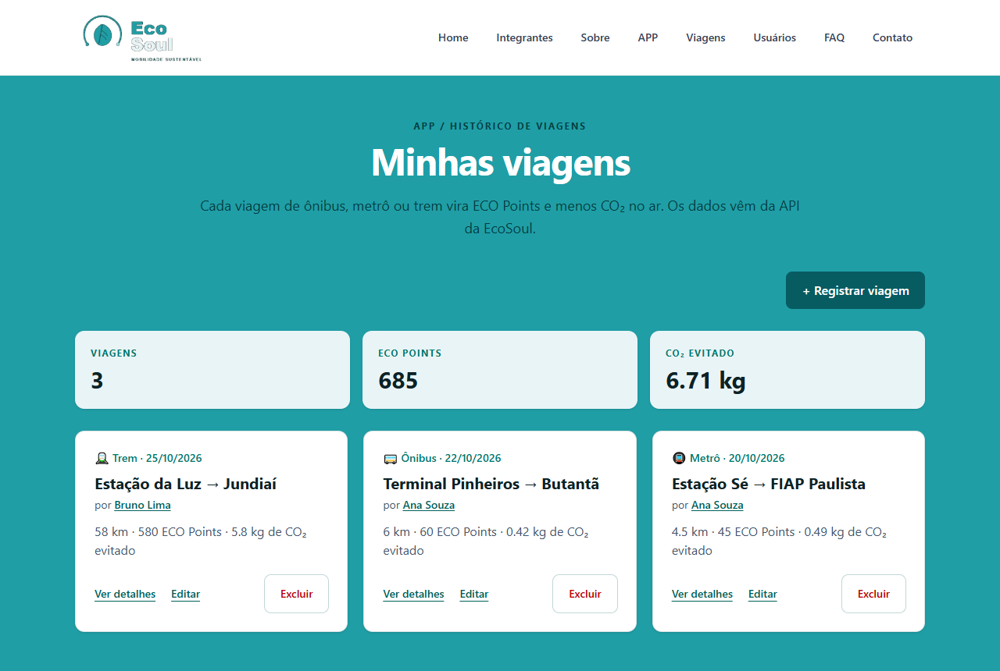
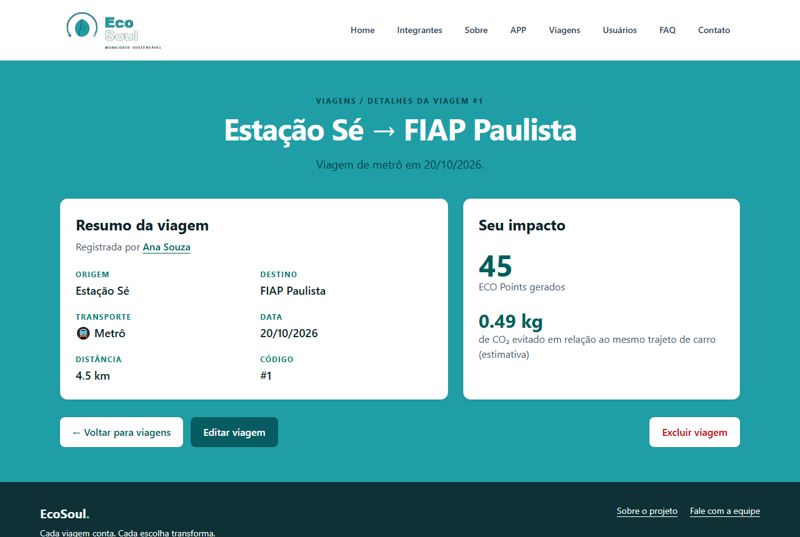
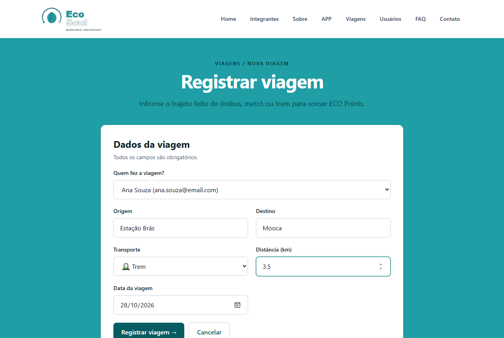
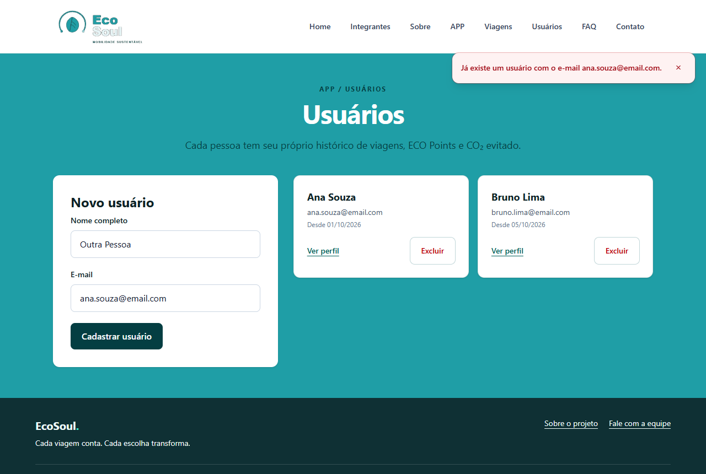
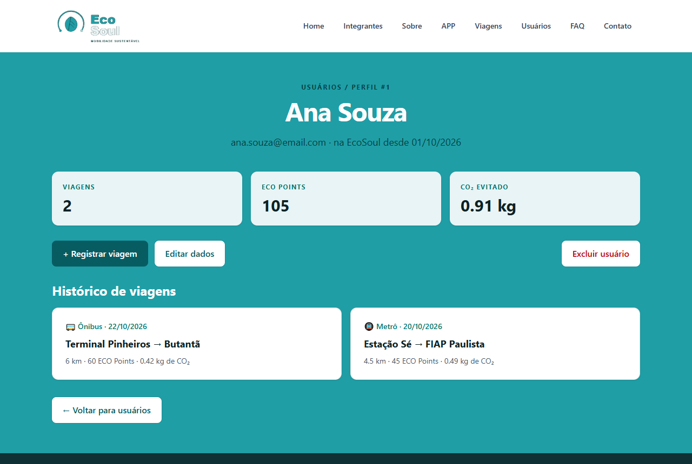
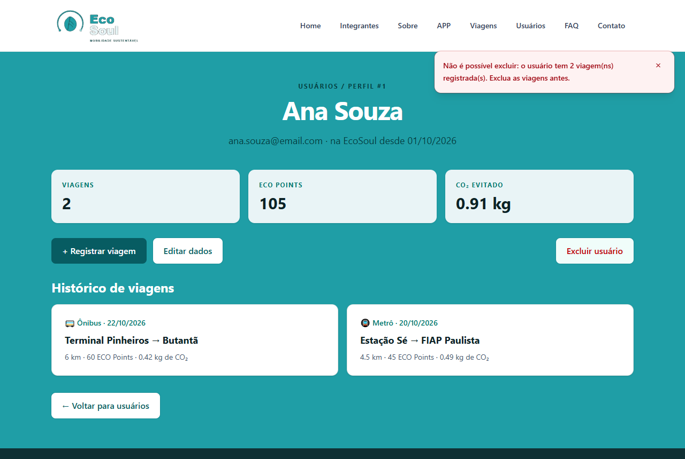
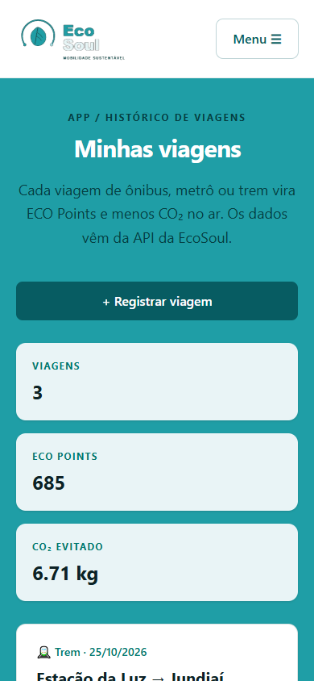

EcoSoul
Mobilidade sustentável: cada viagem de transporte público vira ECO Points
Equipe: EcoSoul · Turma: 1TDSPH
| Integrante | RM |
|---|---|
| Giovanni Lopez Zavam | RM 571403 |
| Murilo Martins de Campos | RM 572674 |
| Arthur Palacio Alves | RM 573441 |
| Thiago Andrade Silva Piedade | RM 569741 |
A EcoSoul incentiva o uso de ônibus, metrô e trem. Cada viagem registrada gera ECO Points, e o sistema mostra quanto CO₂ aquela viagem evitou em relação ao mesmo trajeto feito de carro.
Esta entrega é a API RESTful em Java com Spring Boot que dá suporte ao front-end (React + Vite + TypeScript). Ela guarda os usuários e as viagens de cada um no banco Oracle da FIAP, valida os dados com regras de negócio e devolve respostas em JSON com os códigos HTTP corretos.
Fora do escopo: validação automática do trajeto por GPS/IA e a troca de pontos por benefícios. Essas funções aparecem no protótipo do front-end como proposta futura.
| Funcionalidade | O que faz |
|---|---|
| Cadastro de usuários | Cria, lista, consulta, edita e exclui usuários. O e-mail é único (409 se repetido). |
| Registro de viagens | Cria, lista, consulta, edita e exclui viagens de ônibus, metrô ou trem, sempre ligadas a um usuário existente. |
| Histórico por usuário | GET /usuarios/{id}/viagens devolve só as viagens daquela pessoa. |
| Regras de negócio (BO) | Origem e destino de 2 a 80 caracteres e diferentes entre si; distância entre 0 e 500 km; data não pode estar no futuro; nome de 3 a 100 caracteres; e-mail válido; usuário com viagens não pode ser excluído. |
| Erros padronizados | Toda falha volta em JSON { status, erro, mensagem }, que o front-end mostra para o usuário. |
| Integração com o front | CorsFilter libera o acesso do site; o front calcula ECO Points (10 por km) e CO₂ evitado a partir dos dados da API. |
URL base local: http://localhost:8080 · URL publicada: A PREENCHER após o deploy no Render
| Verbo | URI | Descrição | Corpo | Status esperados |
|---|---|---|---|---|
| GET | /viagens | Lista todas as viagens (com o usuário dono) | — | 200, 500 |
| GET | /viagens/{id} | Busca uma viagem pelo id | — | 200, 400, 404, 500 |
| POST | /viagens | Cadastra uma viagem | Viagem (sem id) | 201, 400, 500 |
| PUT | /viagens/{id} | Atualiza uma viagem | Viagem (sem id) | 200, 400, 404, 500 |
| DELETE | /viagens/{id} | Exclui uma viagem | — | 204, 400, 404, 500 |
| GET | /usuarios | Lista todos os usuários | — | 200, 500 |
| GET | /usuarios/{id} | Busca um usuário pelo id | — | 200, 400, 404, 500 |
| GET | /usuarios/{id}/viagens | Lista as viagens de um usuário | — | 200, 400, 404, 500 |
| POST | /usuarios | Cadastra um usuário | { nome, email } | 201, 400, 409, 500 |
| PUT | /usuarios/{id} | Atualiza nome e e-mail | { nome, email } | 200, 400, 404, 409, 500 |
| DELETE | /usuarios/{id} | Exclui um usuário sem viagens | — | 204, 400, 404, 409, 500 |
| Status | Quando acontece |
|---|---|
| 200 OK | Consulta ou atualização feita com sucesso. |
| 201 Created | Registro criado. O cabeçalho Location traz o endereço do novo recurso. |
| 204 No Content | Registro excluído. |
| 400 Bad Request | Dados inválidos (regra de negócio, JSON mal formado ou id não numérico). |
| 404 Not Found | Registro ou endpoint inexistente. |
| 409 Conflict | E-mail já cadastrado ou usuário com viagens não pode ser excluído. |
| 500 Internal Server Error | Falha ao acessar o banco de dados ou erro inesperado. |
POST /viagens (corpo enviado):
{
"usuario": { "id": 1 },
"origem": "Estação Sé",
"destino": "FIAP Paulista",
"transporte": "METRO",
"distanciaKm": 4.5,
"data": "2026-10-20"
}
Resposta 201:
{ "id": 1, "usuario": { "id": 1, "nome": "Ana Souza", "email": "ana.souza@email.com", "dataCadastro": "2026-10-01" },
"origem": "Estação Sé", "destino": "FIAP Paulista", "transporte": "METRO", "distanciaKm": 4.5, "data": "2026-10-20" }
Resposta 409 (POST /usuarios com e-mail repetido):
{ "status": 409, "erro": "Conflict", "mensagem": "Já existe um usuário com o e-mail ana.souza@email.com." }
Capturas reais do front-end funcionando com esta API e o banco Oracle.







Duas entidades no Oracle. Um usuário registra zero ou muitas viagens; cada viagem pertence a exatamente um usuário (chave estrangeira ID_USUARIO).
| Restrição | Regra |
|---|---|
| PK_ECO_USUARIO / PK_ECO_VIAGEM | Chaves primárias geradas automaticamente (IDENTITY). |
| UN_ECO_USUARIO_EMAIL | Não pode haver dois usuários com o mesmo e-mail. |
| FK_ECO_VIAGEM_USUARIO | Toda viagem aponta para um usuário existente. |
| CK_ECO_VIAGEM_TRANSPORTE | Transporte só pode ser ONIBUS, METRO ou TREM. |
| CK_ECO_VIAGEM_DISTANCIA | Distância maior que 0 e no máximo 500 km. |
Legenda: PK chave primária · FK chave estrangeira · UK valor único. O script completo está em sql/script.sql.
Pacote base: br.com.fiap.ecosoul. O diagrama foi dividido em quatro partes para ficar legível.
Viagem tem um atributo usuario: Usuario (associação muitos-para-um) e um transporte do tipo enumerado TipoTransporte.
Nas próximas páginas: 6.2 exceções e infraestrutura; 6.3 e 6.4 as camadas Resource → BO → DAO → ConnectionFactory de cada entidade. Setas tracejadas indicam dependência (uma classe usa a outra); o triângulo vazado indica herança/implementação.
As quatro exceções do projeto herdam de RuntimeException. O TratadorDeErros trata todas elas e devolve o status HTTP correto, e o CorsFilter implementa a interface Filter para liberar o acesso do front-end.
UsuarioResource recebe a requisição, UsuarioBO valida e aplica as regras, e UsuarioDAO executa o SQL. O UsuarioBO também usa o ViagemDAO para impedir a exclusão de um usuário que tem viagens.
Mesmo fluxo para viagens. O ViagemBO usa o UsuarioDAO para conferir se o usuário dono da viagem existe antes de gravar.
| Ferramenta | Versão / observação |
|---|---|
| Java JDK | 21 ou superior (testado com JDK 25) |
| Spring Boot | 4.1.2 (dependências: Spring Web MVC e driver Oracle ojdbc17) |
| Maven | Maven Wrapper incluso (mvnw / mvnw.cmd), não precisa instalar |
| IDE | IntelliJ IDEA (recomendado) ou VS Code com Extension Pack for Java |
| Banco de dados | Oracle da FIAP (oracle.fiap.com.br:1521/ORCL) + Oracle SQL Developer |
| Front-end (opcional) | Node.js 20.19+ ou 22.12+ e npm |
rmXXXXXX e execute EcoSoul-API/sql/script.sql (F5). Ele cria as tabelas e insere dados de exemplo.EcoSoul-API (onde está o pom.xml). Aguarde o Maven baixar as dependências.DB_USER=rmXXXXXX;DB_PASSWORD=sua_senha. A senha nunca fica no código.EcoSoulApiApplication, ou no terminal, dentro de EcoSoul-API:
mvnw.cmd spring-boot:run (Windows) ./mvnw spring-boot:run (Linux/macOS)
http://localhost:8080/viagens e http://localhost:8080/usuarios no navegador, ou use Postman/Insomnia com os endpoints da seção 3.EcoSoul, crie um arquivo .env com VITE_API_URL=http://localhost:8080 e rode npm i e npm run dev.A API é publicada no Render usando o Dockerfile da pasta EcoSoul-API (Root Directory EcoSoul-API, runtime Docker), com DB_USER e DB_PASSWORD cadastrados como variáveis de ambiente.
| Item | Link |
|---|---|
| Repositório GitHub | https://github.com/Giovanni0403/Challenge_SoulUp |
| API publicada (Render) | A PREENCHER |
| Front-end (Vercel) | A PREENCHER |